|
Yunfei Zhang I am a PhD student at the Chair of Traffic Engineering and Control at the Technical University of Munich (TUM) since February 2021. Previously, I finished my bachelor in civil engineering from Tongji University in China in 2017 and my master in Transportation Systems also from TUM in 2020. My research interests include Autonomous Vehicles, Traffic flow theory, and Mobility-on-Demand systems. Email / Bio / Google Scholar / GitHub / LinkedIn / ResearchGate |

Publications |
2026 |
|
|
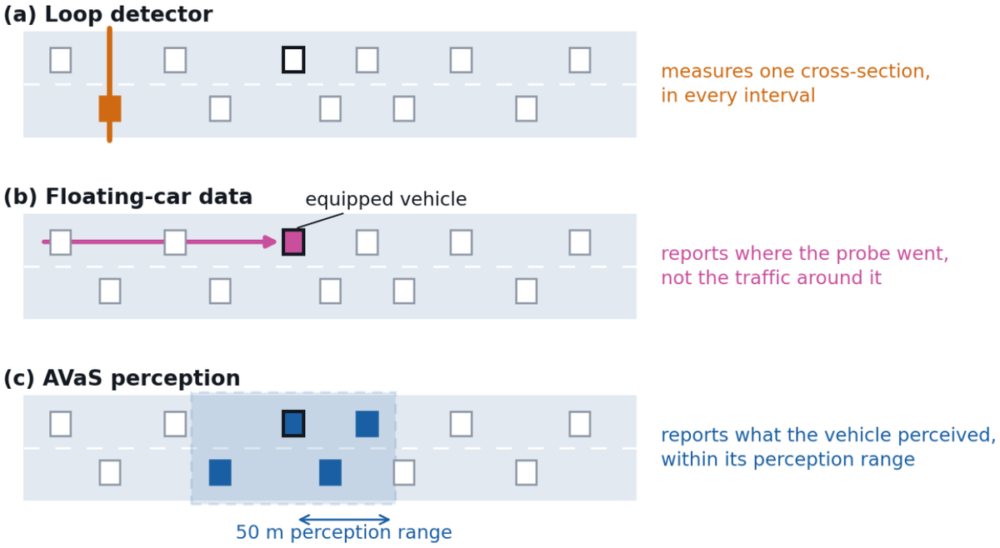 |
Autonomous Vehicles as Sensors: From Individual Perception to Network-Wide Traffic-State Estimation and Prediction
Yunfei Zhang, Florian Dandl, Michael F. Hyland, Klaus Bogenberger Transportation Research Part C (TR-C), 2026 (submitted) We use an autonomous vehicle fleet as a network-wide sensor and combine its observations with loop detectors to estimate and predict (up to 30 minutes ahead) urban traffic states with a graph neural network, achieving 76–80% lower density errors than floating-car data. |
|
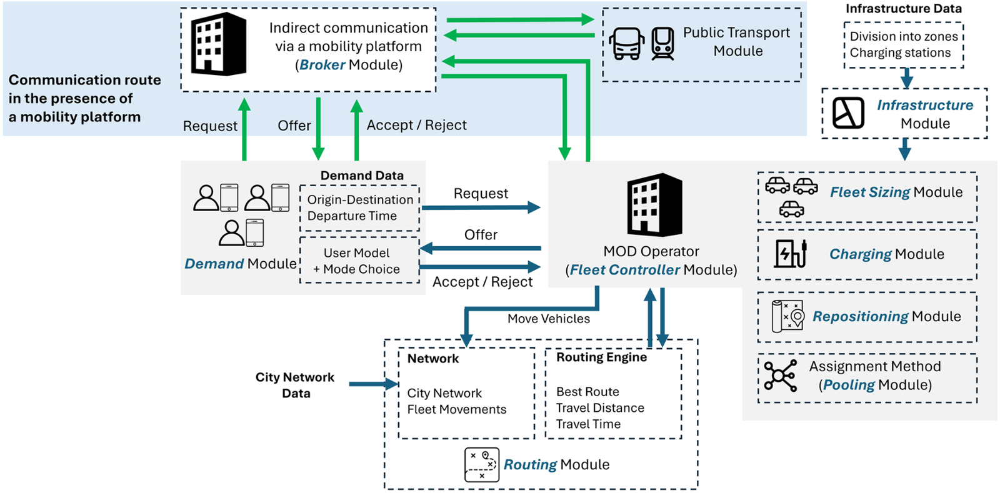 |
FleetPy: An Open Source Simulator for Reproducible Research on Mobility-on-Demand Services
Roman Engelhardt, Florian Dandl, Arslan Ali Syed, Chenhao Ding, Santiago Alvarez-Ossorio Martinez, Yunfei Zhang, Hoda Hamdy, Joel Brodersen, Zhipu Chen, Klaus Bogenberger European Transport Research Review (ETRR), 2026 Full paper / bibtex / GitHub We present FleetPy, an open-source agent-based simulator that provides a consistent and modular platform for reproducible research on Mobility-on-Demand services, including benchmark scenarios for Manhattan, Munich, and Chicago. |
2025 |
|
|
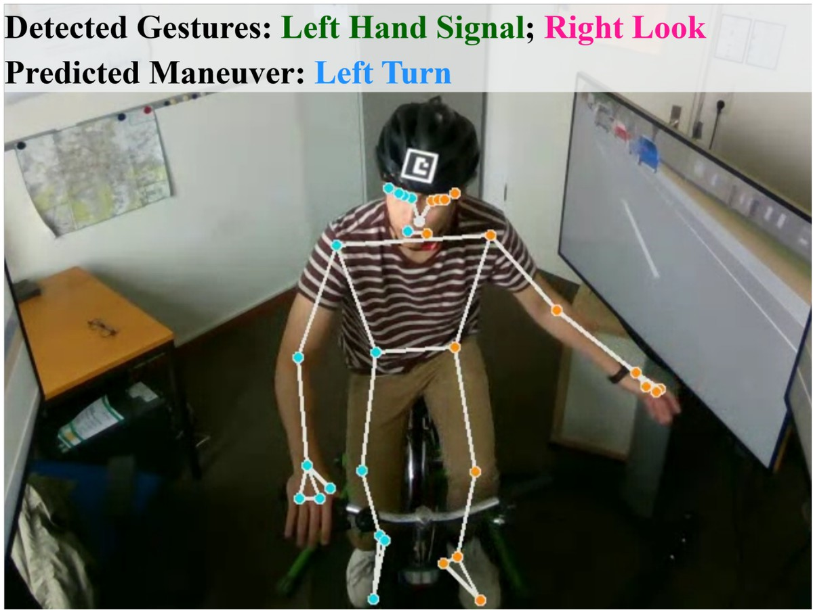 |
Cyclist Maneuver Prediction at Unsignalized Intersection Using a VR-Based Bike Simulator
Tian Zheng, Yunfei Zhang, Mathias Pechinger, Johannes Lindner, Klaus Bogenberger MT-ITS, 2025 Full paper / bibtex We propose a two-stage B-LSTM model that predicts cyclists' maneuvers at an unsignalized intersection from their explicit and implicit gestures, using video data collected in a VR-based bicycle simulator. |

|
Transforming Travel: Strategic Integration of Advanced Air Mobility in Germany
Katrin Lippoldt, Yunfei Zhang, Florian Allroggen, Lukas Preis, Klaus Bogenberger TRB, 2025 (accepted) We study the possibilities and feasible connections for Advanced Ari Mobility (AAM) in Germany. |
|
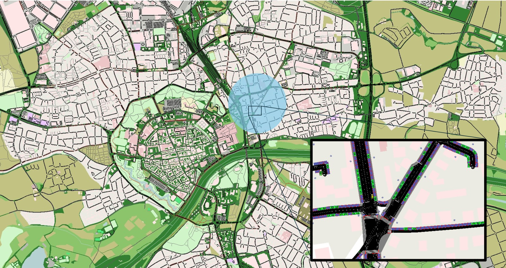 |
Autonomous Vehicles as Sensors: Traffic State Estimation
Yunfei Zhang, Jeremias Gerner, Mario Ilic, Stefanie Schmidtner, Klaus Bogenberger TRB, 2025 (accepted) Full paper We use both moving and parked autonomous vehicles to estimate traffic states using a weighted spatio-temporal method. |
2024 |
|
|
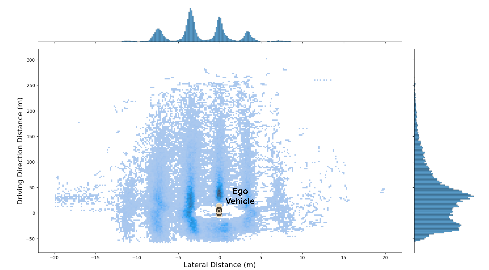 |
Lane-Based Traffic State Estimation on Freeways Using Empirical Automated Vehicle Data
Athanasia Karalakou, Felix Rempe, Lisa Kessler, Yunfei Zhang, Klaus Bogenberger TRB, 2024 (presented) Full paper We use the data collected from automated vehicles to estimate the macroscopic traffic conditions in freeway. |
|
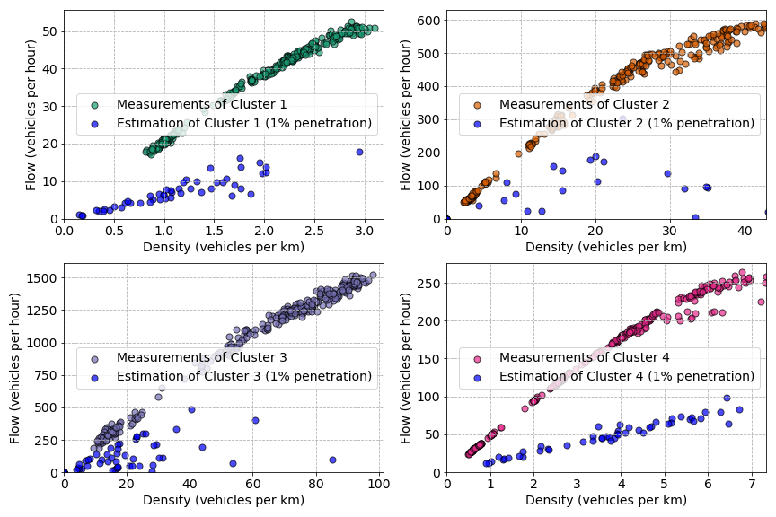 |
Autonomous Vehicles as a Sensor: Simulating Data Collection Process
Yunfei Zhang, Mario Ilic, Klaus Bogenberger TRB, 2024 (presented) Full paper / bibtex We simulate the data collection process for Autonomous Vehicles (AVs). Real-world sensor attributes and more accurate estimation techniques are applied on the on-board sensor data. |
2023 |
|
|
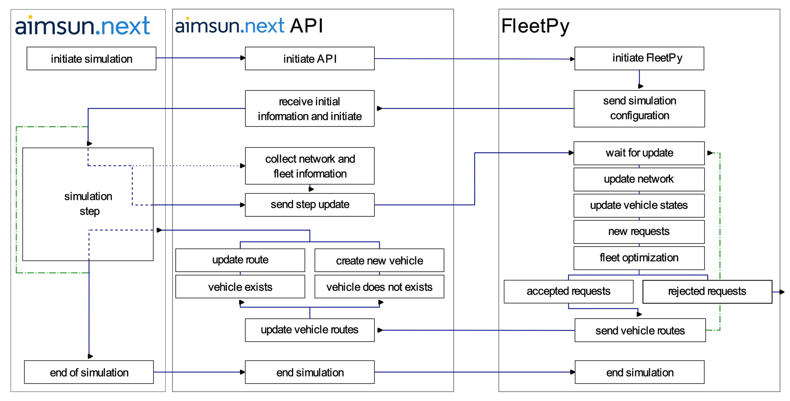 |
Effects of Dynamic and Stochastic Travel Times on the Operation of Mobility-on-Demand Services
Fynn Wolf, Roman Engelhardt, Yunfei Zhang, Florian Dandl, Klaus Bogenberger IEEE ITSC, 2023 Full paper / bibtex We couple the FleetPy and Aimsun to evaluate the effects of dynamic and stochastic travel time on the operation (routing) of Mobility-On-Demand services. |
|
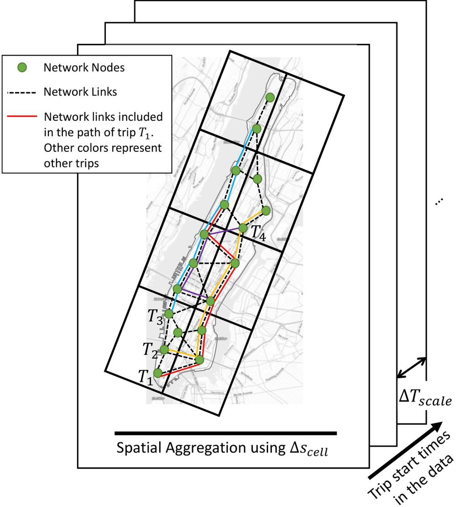 |
Data-driven Spatio-Temporal Scaling of Travel Times for AMoD Simulations
Arslan Ali Syed, Yunfei Zhang, Klaus Bogenberger IEEE ITSC, 2023 Full paper / bibtex We introduce a spatio-temporal optimization strategy for scaling the link-level network travel times using the simulated trip data without additional data sources on the network state. |
|
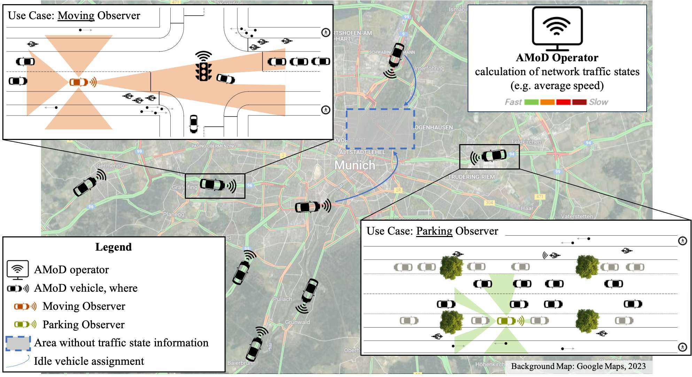 |
A Novel Concept of Traffic Data Collection and Utilization: Autonomous Vehicles as a Sensor
Yunfei Zhang, Mario Ilic, Klaus Bogenberger IEEE ITSC, 2023 Full paper / bibtex We propose a novel concept for the collection and utilization of traffic data: Autonomous Vehicles as a Sensor. |
|
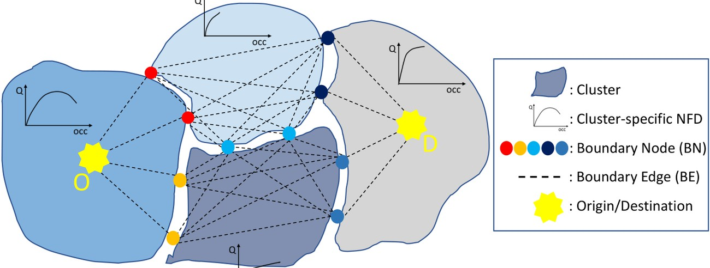 |
Network Fundamental Diagram based Dynamic Routing in a Clustered Network
Yunfei Zhang, Felix Rempe, Florian Dandl, Gabriel Tilg, Matthias Kraus, Klaus Bogenberger MT-ITS, 2023 Full paper / bibtex We propose a dynamic macroscopic routing algorithm, which is updated based on the Network Fundamental Diagram for different clusters. |
|
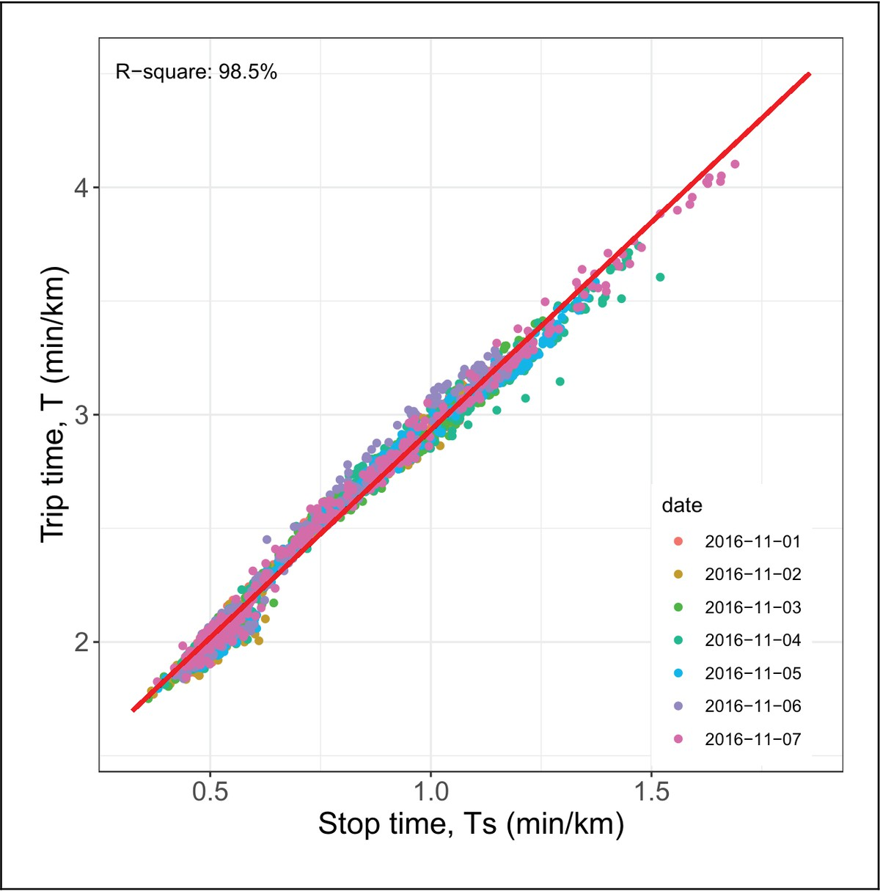 |
Temporal Aggregated Analysis of GPS Trajectory Data Using Two-Fluid Model
Yunfei Zhang, Allister Loder, Felix Rempe, Klaus Bogenberger Transportation research record (TRR), 2023 Full paper / bibtex We use two-fluid model to analyze GPS trajectory data and the results show that the GPS data are able to represent the general traffic. |
2022 |
|
|
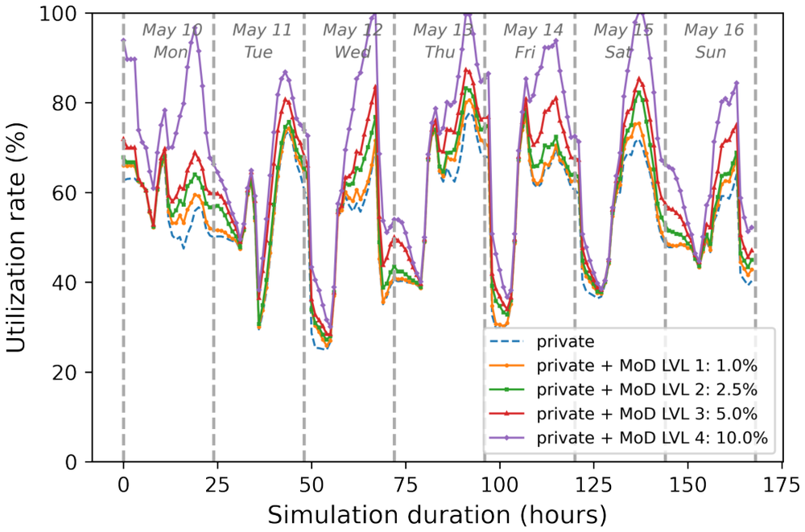 |
Simulating Charging Processes of Mobility-On-Demand Services at Public Infrastructure: Can Operators Complement Each Other?
Yunfei Zhang, Roman Engelhardt, Arslan Ali Syed, Florian Dandl, Cornelius Hardt, Klaus Bogenberger IEEE ITSC, 2022 Full paper / bibtex We study the effects of an electric Mobility-on-Demand fleet using public charging infrastructure. It can increase the utilization during the off-peak time of private car charging. |
|
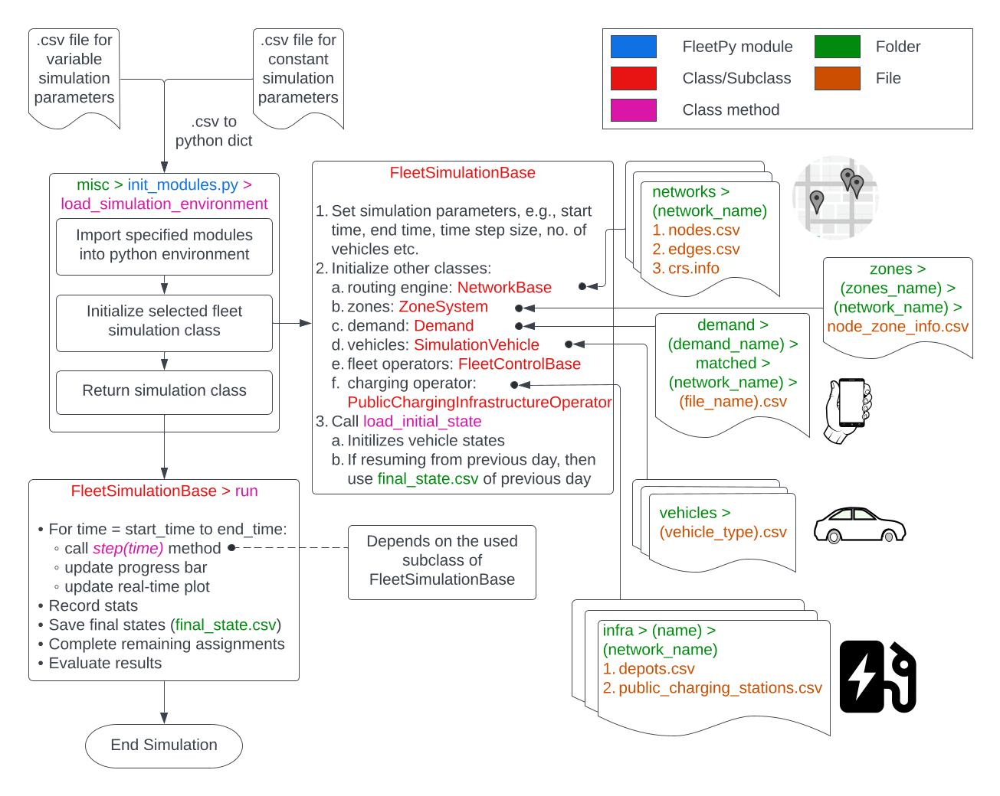 |
FleetPy: A Modular Open-Source Simulation Tool for Mobility On-Demand Services
Roman Engelhardt, Florian Dandl, Arslan Ali Syed, Yunfei Zhang, Fabian Fehn, Fynn Wolf, Klaus Bogenberger arXiv, 2022 Full paper / bibtex / GitHub We create a simulation framework to model and control the tasks of Mobility-on-Demand (MoD) vehicle fleets. |
|
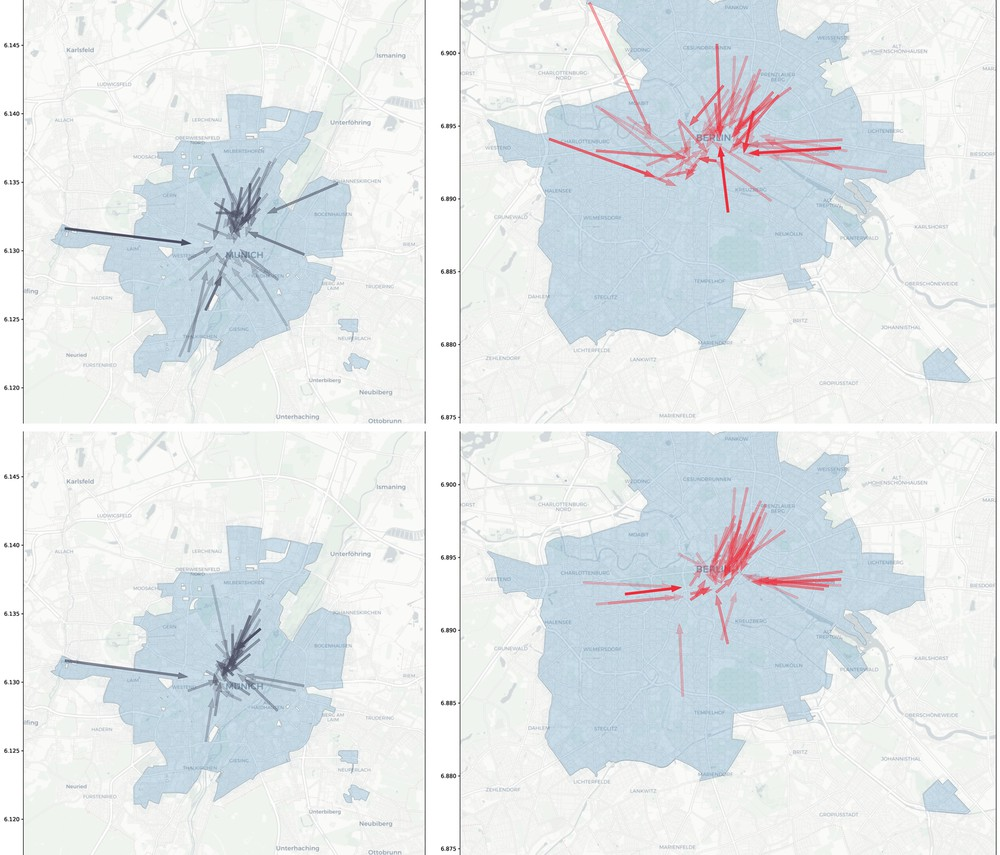 |
Empirical Analysis of Free-Floating Carsharing Systems in Munich and Berlin
Cornelius Hardt, Simone Weikl, Yunfei Zhang, Katrin Lippoldt, Klaus Bogenberger TRB, 2022 bibtex / Poster We study and compare the free-floating car-sharing systems in Munich and Berlin, Germany. This paper is in production for a journal paper. |
Projects |
Research Projects |
STADT:up
Federal Ministry for Economic Affairs and Climate Action (01/2023 - 12/2025) PLIMOS - Planning of intermodal mobility services based on 3D city models Freistaat Bayern (03/2020 - 02/2023) München elektrisiert Federal Ministry for Economic Affairs and Energy (2018 - 2022) Effects of new passenger transport services on the federal road network Federal Highway Research Institute (10/2019 - 09/2021) |
Teaching |
|
Credits: Jon Barron |